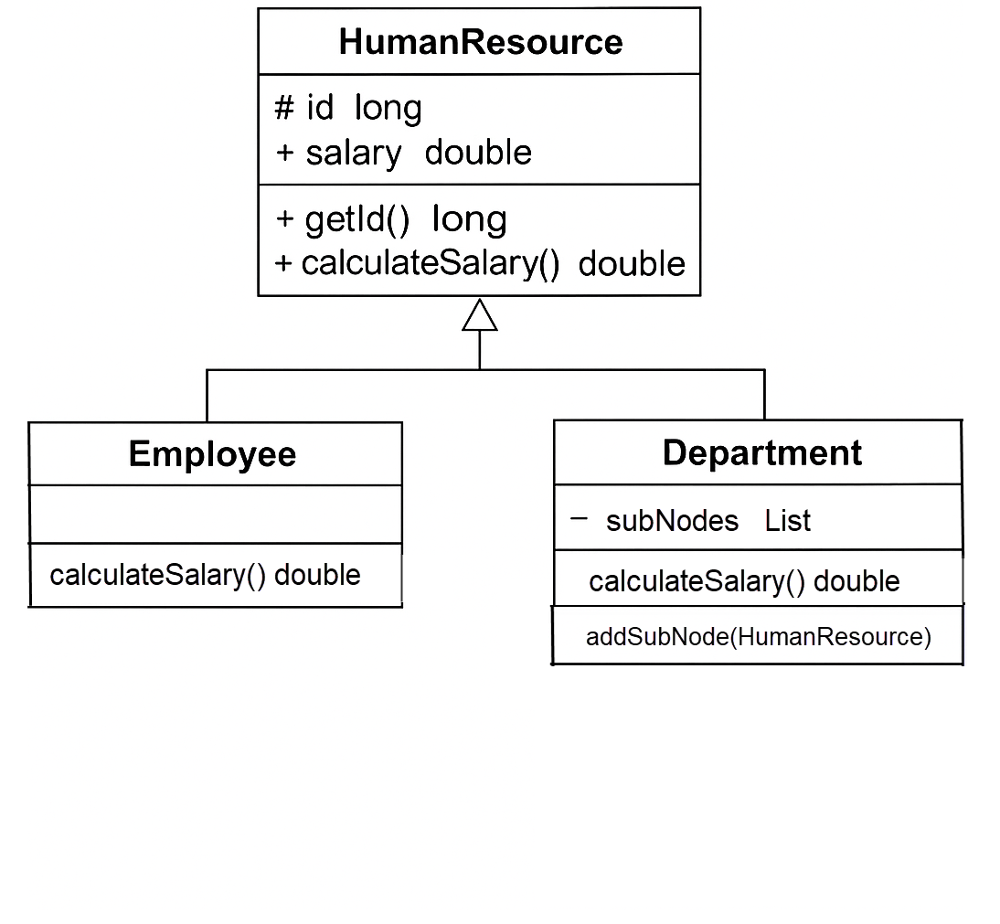

회사 전체 조직도를 기억하고, 부서별로 소속 직원들의 급여 합계를 계산할 수 있는 인터페이스를 제공하려고 한다.
부서는 하위 부서와 직원을 포함하는 트리 구조로 표현된다.
부서별 급여 계산은 트리 순회 알고리즘으로 해결할 수 있다.
이를 위해 복합체(Composite) 패턴을 사용해 설계하고 구현한다.

// 추상 클래스: 공통 부모
public abstract class HumanResource {
protected long id;
protected double salary;
public HumanResource(long id) {
this.id = id;
}
public long getId() {
return id;
}
public abstract double calculateSalary();
}
// 직원 클래스
public class Employee extends HumanResource {
public Employee(long id, double salary) {
super(id);
this.salary = salary;
}
@Override
public double calculateSalary() {
return salary;
}
}
// 부서 클래스
public class Department extends HumanResource {
private List subNodes = new ArrayList<>();
public Department(long id) {
super(id);
}
@Override
public double calculateSalary() {
double totalSalary = 0;
for (HumanResource hr : subNodes) {
totalSalary += hr.calculateSalary();
}
this.salary = totalSalary;
return totalSalary;
}
public void addSubNode(HumanResource hr) {
subNodes.add(hr);
}
}
// 조직도를 작성하는 코드
public class Demo {
private static final long ORGANIZATION_ROOT_ID = 1001;
private DepartmentRepo departmentRepo; // 의존성 주입
private EmployeeRepo employeeRepo; // 의존성 주입
public void buildOrganization() {
Department rootDepartment = new Department(ORGANIZATION_ROOT_ID);
buildOrganization(rootDepartment);
}
private void buildOrganization(Department department) {
List subDepartmentIds = departmentRepo.getSubDepartmentIds(department.getId());
for (Long subDepartmentId : subDepartmentIds) {
Department subDepartment = new Department(subDepartmentId);
department.addSubNode(subDepartment);
buildOrganization(subDepartment);
}
List employeeIds = employeeRepo.getDepartmentEmployeeIds(department.getId());
for (Long employeeId : employeeIds) {
double salary = employeeRepo.getEmployeeSalary(employeeId);
department.addSubNode(new Employee(employeeId, salary));
}
}
}